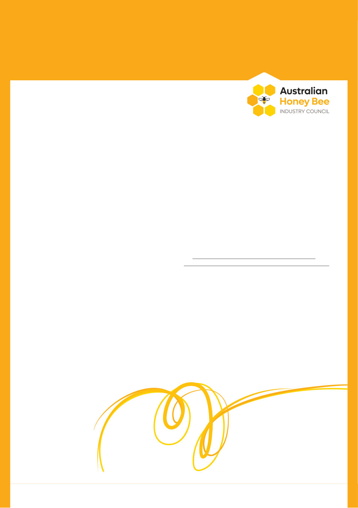

20 | Published since 1918 by the VAA – founded in 1892
Industry Updates
from the AHBIC Newsletter
Imported Honey
AgriFutures
Seasonal Outlook
Pollination
AHBIC Chair Report —
August 2026
Jon Lockwood, AHBIC Chairman
20 | Published since 1918 by the VAA – founded in 1892
With spring just around the corner and pollination season well
underway, its go time for beekeepers. My understanding is that most
of the country has received decent rainfall over the winter, despite
the forecast of a “super El Nino,” let’s hope the rain keeps coming.
There are always some areas missing out, areas of Queensland are
dry and are calling for rain. Reports that prospects are reasonable
across the board. All states have reasonable budding in some areas.
I can speak more for NSW, inland is very limited on budding, canola
is very early and mostly will be done after almonds, other ground
flora looks promising for spring and many areas on the coast are
showing good budding. With the challenges of varroa, let’s hope
mother nature is kind enough to lessen the stress.
As predicted, we are starting to witness a shift in dynamics
within the pollination sector. With the reduction of managed
colonies as well as the decimation of the feral population, pollination
dependent industries are becoming nervous and more engaged
with industry. It is becoming a common sentiment, that “we are not
seeing bees on the flowers like we used to.” A strong collaboration
will be required between both sectors to result in success.
It is very concerning to hear in many instances that bee hive
audits are not matching up with the hive strength supplied to
almond farms. As prices rise, bees are being paid by per frame,
auditing correctly will become more of a contentious issue. It is
paramount to work closely with your farmer or broker to develop a
trustworthy relationship. I encourage beekeepers to be present at
the time of audit to encourage accountability. As many reports have
been received, AHBIC will be writing to relevant parties expressing
concern on behalf of industry.
The fight for change continues. AHBIC have had several meetings
with DAFF of late. The main goal is to get the Government to lift the
testing protocols for honey coming into Australia. AHBIC has another
meeting next week where pressure will be applied once again.
Previously AHBIC approached DAFF with concerns of a
biosecurity risk with imported honey transmitting deformed wing
virus (DWV). DAFF stated that there wasn’t enough solid evidence
to intervene. Recently an Agrifutures publication by Dr John
Roberts “Transmission of deformed wing virus (DWV) via imported
honey,” displayed that there is a slight risk of DWV being vertically
transmitted to bees via honey. As a result, AHBIC have taken the
paper to DAFF expressing the concerns. DAFF have acknowledged
the possible threat and AHBIC are working closely with them to
derive outcomes promptly.
https://agrifutures.com.au/product/project‐snapshot‐
transmission‐of‐deformed‐wing‐virus‐dwv‐via‐imported‐honey/
Over the past months, AgriFutures have advertised for several
positions on the honey bee and pollination advisory panel.
I, Amanda Olthof and Samantha Beresford from AgriFutures sat on
the selection committee. It was great working with Amanda and
Samantha, and they truly demonstrated a deep understanding of
our industry. It was fantastic to have received 23 applications for
the panel, however, it made our job very hard making the final
selections! In October, the new panel will meet in person, I will
attend to catch up with the panel to further develop a relationship
and demonstrate industries needs in this space.
I hope that all have a good spring, all the best with the mite and
look after each other.